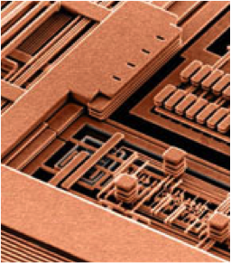
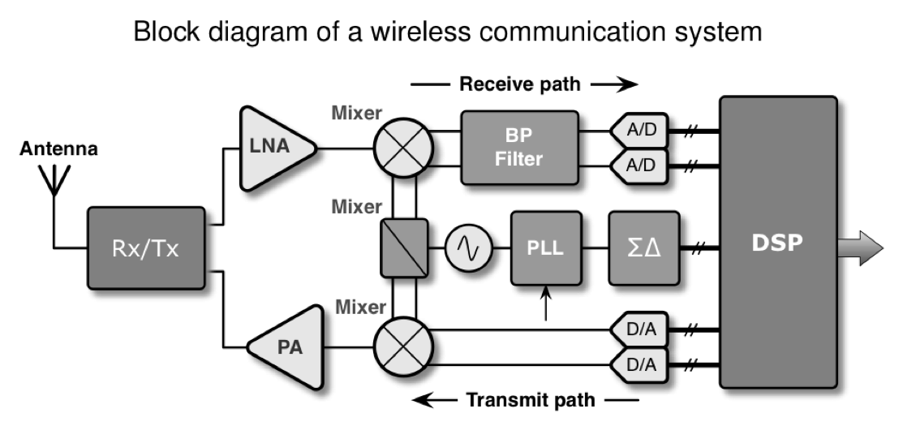

Einleitung#
### Lernziele des ModulsEinblicke in mikroelektronische Systeme
Analyse und Funktion von Halbleiterbauelementen
Halbleiterphysik
Modellbildung
Netzwerkanalyse/-synthese
Anwendung von SPICE in der Schaltungsentwicklung
Spezifikation
Partitionierung
Design
Einsatz von Entwicklungsboards, Embedded Systems (SoC)
STEMlab von redpitaya
Wissenschaftliches Rechnen / Datenwissenschaft#
Analoge Schaltungssimulation (SPICE)#
Betriebssystem (OS) - Werkzeuge (Tools)#
-
Linux-Tools unter Windows
Code Editoren#
Data Science#
Ordner im Dateisystem (sandboxing, virtualenv)
Tabellenformate: Comma-Separated-Values (CSV), Spreadsheet (.xlsx, .ods)
Spezielle Formate, z.B. MATLAB mat, HDF5
Embedded Databases
Schreibst Du noch oder TeXst Du schon?#
LaTeX Editoren#
IDE’s
Collaborative Frameworks
Literaturverwaltung und LaTeX#
Laborarbeit#
Charakterisierung von Bauelementen.
Dioden, Bipolartransistoren und MOSFETs
Anwendung unterschiedlicher Beschreibungsebenen
Systemebene (Mathe, z.B. Matlab/Simulink, Python)
Schaltungsebene (SPICE)
Charakterisierung (Messungen)
Analog System Lab Kit – ASLK Pro
Messautomatisierung Red Pitaya STEMlab 125-14/10
Technischer Bericht
Berichtsvorlage DIN A4 (Word/LaTeX ) IEEE templates
Gruppen mit 2-3 Studierenden
Elektronische Abgabe als PDF in der AULIS-Gruppe
Inhalte der Laborarbeit#
Literaturrecherche in Fachjournalen, Fachforen (z.B. auf den Webseiten der Halbleiterhersteller) und der Bibliothek
Einarbeitung in den Red Pitaya
Systemkonfiguration
Programmierung mit Python
Konzeptionierung der Bauteilcharakterisierung
Partitionierung des Messaufbaus (Funktionen erläutern)
Aufgabenaufteilung (Projektmanagement)
Entwurf, Implementierung und Bewertung
SPICE-Modellierung und Simulation
Datenanalyse
Entwicklungsbericht (Technischer Bericht)
Analyse vs. Design#
Entgegen populärwissenschaftlicher Meinungen ist Schaltungsanalyse und Schaltungsentwurf keine “Schwarze Magie”
Schaltungsanalyse
ist die Fähigkeit, Schaltungen in handhabbare Teile zu zerlegen
basierend auf einem einfachen, aber hinreichend genauen Modell
“Just-in-time” Modellierung – verwende kein komplexes Modell, so lange es nicht benötigt wird …
eine Schaltung \(\Rightarrow\) eine Lösung
Schaltungsentwurf
ist die Fähigkeit der Schaltungssynthese auf Basis von Erfahrung und intensiver Analyse
eine Spezifikation \(\Rightarrow\) viele Lösungen
Entwurfspraktiken werden am besten durch’s “Selbermachen” ausgebildet – daher ein Entwurfsprojekt …
Es war einmal …#


Damals und heute#


Packungsdichten#

Moore’sches Gesetz#
From Sand to Silicon (Infineon, Dresden)#
FinFET (Intel)#
TSMC Fab (Next Gen 7/5 nm)#
Reiseaussichten#
Dies ist der Beginn eines Prozesses,
besser noch, eines Abenteuers.
Reiseziele#
Mehr über Signale wissen, die in elektronischen Systemen verarbeitet werden.
Schaltungsdiagramme lesen können.
Wissen über grundlegende Blöcke eines Systems aneignen.
Wissen, wie Transistoren arbeiten und in modernen integrierten Technologien hergestellt werden.
Eigenarten der Modellierung mikroelektronischer Bauelemente und der physikalischen und chemischen Prinzipien im Herstellungsprozess kennenlernen.
Reisebedingungen#
Anwendung Ihres Werkzeugkastens.
Grundlagen der Elektrotechnik/Physik
Elektromagnetische Wellen
Angewandte Mathematik und Systemtheorie
Trainingswille
Pioniergeist
Spa{\ss}
Schnallen Sie sich an, die Reise beginnt …
Systemhierarchie#

System Assembly#

Entnommen den Vorlesungsfolien von [1].
Schnittstellen zur Aussenwelt#

Entnommen den Vorlesungsfolien von [1].
Meeting mit einem System#

Entnommen den Vorlesungsfolien von [1].
System in a Package (SiP)#

Entnommen den Vorlesungsfolien von [1].
Backend Phasen#
Packaging
Zuverlässigkeit = Qualität auf Zeit
Testing auf Wafer Level, known good die (KGD)
Burn-in und Accelerated Aging (thermischer Stress, Arrhenius Gesetz)
Automatic Test Equipment (ATE)
System Probe
Interconnect Test
Build-in Self-Test (BIST)
Statistische Datenanalyse und Yield Prognosen
Ausfallrate FIT (failure in time)
Badewannenkurve
Sie werden Experte#
Leistungsmerkmale.
Hintergrundwissen
Systemverständnis, Architektur, Herstellungsverfahren, Implementation
Unterbewusste Kompetenz
Abgespeicherte Erfahrungen aus Erfolgsgeschichten und Misserfolgen
Spezialwissen
Berufsspezifisches Wissen
Teamwork Haltung
Kommunikationsfähigkeit, Berichtswesen und technische Präsentation
Kreativität
Tool-Kenntnisse
Evolution von Produkten#
Angetrieben durch Technologieverbesserung
Kosten (größere Chips, geringere Größe der Merkmale, bessere Ausbeute)
Leistung (neue Bauteile, höhere Geschwindigkeit, weniger Stromverbrauch)
Angetrieben durch Verbesserung der Entwurfsmethodik
Architektur (Leistung, Funktionen)
CAD (Entwicklungskosten, Time-to-Market)
Komplexität der Designs verdoppelt sich jedes Jahr (Moore’s Gesetz)
Rolle von CAD
Verbesserung der Produktivität von Konstruktionsprozessen
Reduzierung der Komplexität für den Konstrukteur
Sicherstellung des ordnungsgemäßen Betriebs der Geräte
EDA Kompetenz#
EDA-Anbieter (Tool-Entwickler)
Identifikation von Entwurfsaufgaben, Bedarf an Werkzeugen
Entwicklung von Strategien und Algorithmen
Implementierung von Software-Werkzeugen
Verifikation der Stabilität und Funktionalität der Software-Tools
IC-Hersteller
Entscheidungsplanung, welches Tool die Produktivität steigern könnte
EDA-Tool-Manager, Installation und Wartung
Experten für Softwareeinsatz, Anwendung in Produktdesign und -entwicklung
Dozenten und Studenten
Jobchancen
Notwendigkeit, auf dem Laufenden zu bleiben
Design-/Entwurfsmethodik#
Full Custom - vollständig manuell: ASIC
Überwiegend analoge Schaltungen
Einfache digitale Gatter
Volle Kontrolle, aber lange Entwicklungszeit (bis zu Jahren)
Semi-custom: ASIC-Fertigung mit Verwendung von vorgefertigten Teilen
Standardzellen, Makrozellen, IP’s
Wiederverwendung von vordefinierten Blöcken oder Maskensätzen
Eingeschränkte Kontrolle/Flexibilität, aber kürzere Entwicklungszeit (bis zu Wochen)
Vollständig automatisiert: Keine Fertigung, reprogrammierbare ASICs
FPGA, PLA
Ausschließlich digitale Schaltungen
Schnelles Prototyping
Nachhaltige Elektronik …#
Geekchester.
Warum es sicht lohnt …#
Circuit Song.
Und ab an den Strand …#
Viva la Electronica.